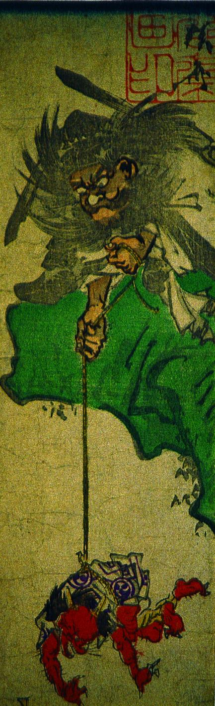

崖の上の鍾馗が、腰縄の赤鬼を吊っている。赤鬼は太鼓模様の着物、虎皮の脚絆をつけている。
著作者：河鍋暁斎／出典：親書誌：A5_pushkin_0042：（小鬼を吊るす鍾馗）；コオニヲツルスショウキ／日付：2011／資源識別子：A5_pushkin_0042_0001_0000
Copyright (c)2010- International Research Center for Japanese Studies, Kyoto, Japan. All rights reserved.